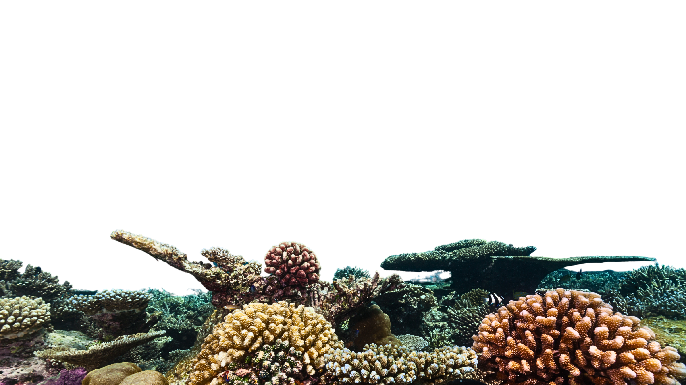

Suku Bajau
Suku Bajau
Sejarah
Menilik catatan sejarah, Suku Bajo muncul dalam naskah kuno, seperti Sejarah Dinasti Tang dari Tiongkok pada abad ke-7 Masehi. Sebagai bagian dari kelompok "kurung" atau "orang-orang liar" di pulau-pulau Laut Selatan, mereka telah menandai kehadiran mereka dalam pelayaran maritim sejak zaman dahulu.
Keunikan
Kemampuan Menyelam yang Ajaib: Keunikan pertama yang memikat adalah kemampuan menyelam luar biasa Suku Bajo. Mereka, tanpa alat bantu pernapasan, dapat menyelam hingga kedalaman 70 meter. Rincian genetik, seperti mutasi pada gen PDE10A, memberi mereka kemampuan menahan napas lebih lama dan tahan tekanan air, memperkaya warisan genetik unik di dunia.
Budaya Tradisi
- Duata: Jembatan Spiritual dengan Alam Laut Tradisi Duata, ritual sakral Suku Bajo, menjadi jembatan antara mereka dan kebesaran Ilahi. Melibatkan upacara seperti Larungan, ritual ini digunakan untuk pengobatan dan mencari rezeki. Dewa Duata, diundang untuk merasuki orang sakit, menjadi perantara yang menghubungkan Suku Bajo dengan alam spiritual dan laut.
Cerita Keunikan